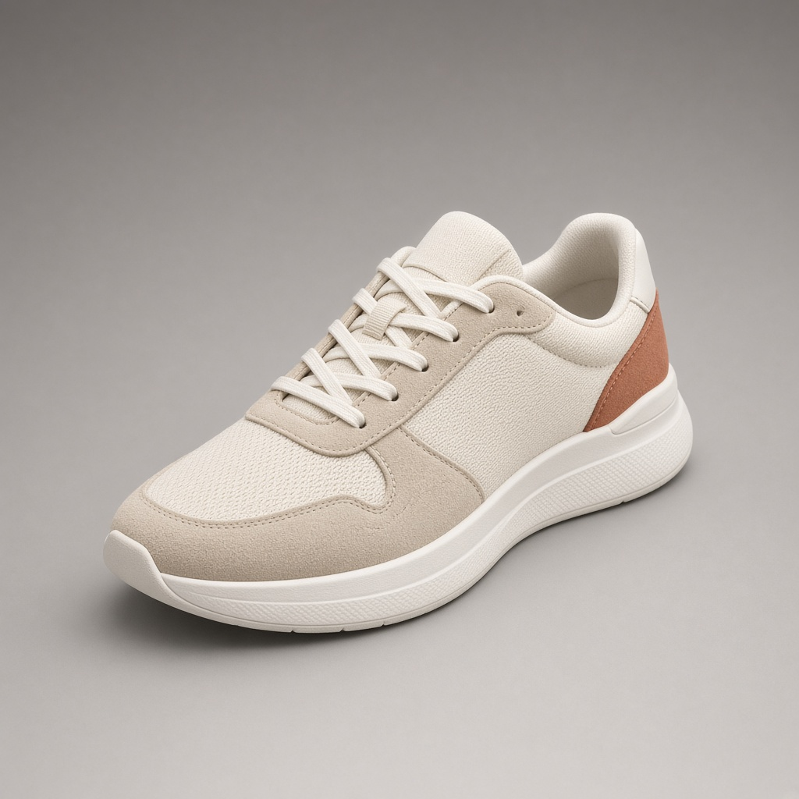
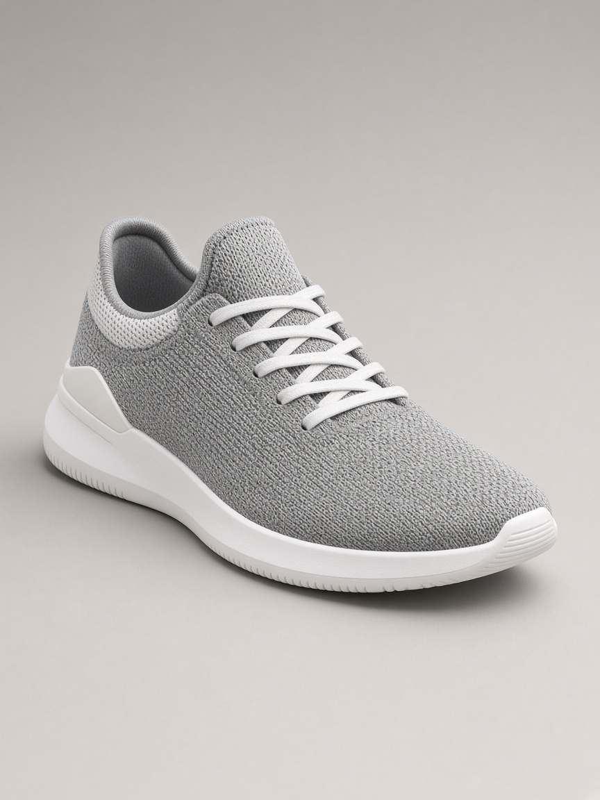
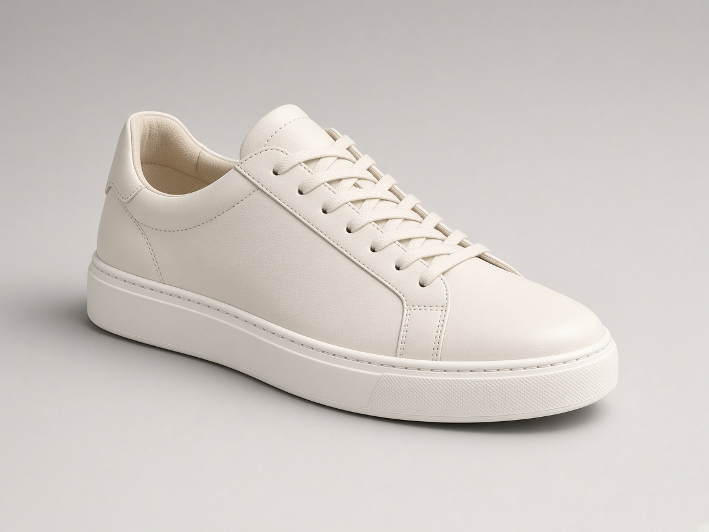
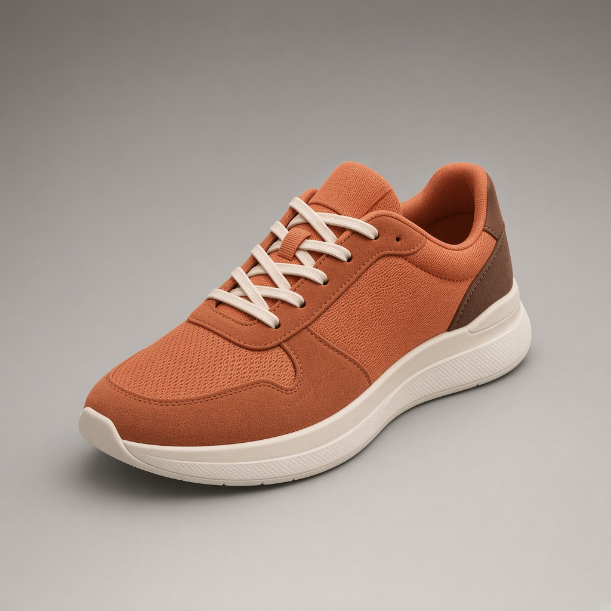
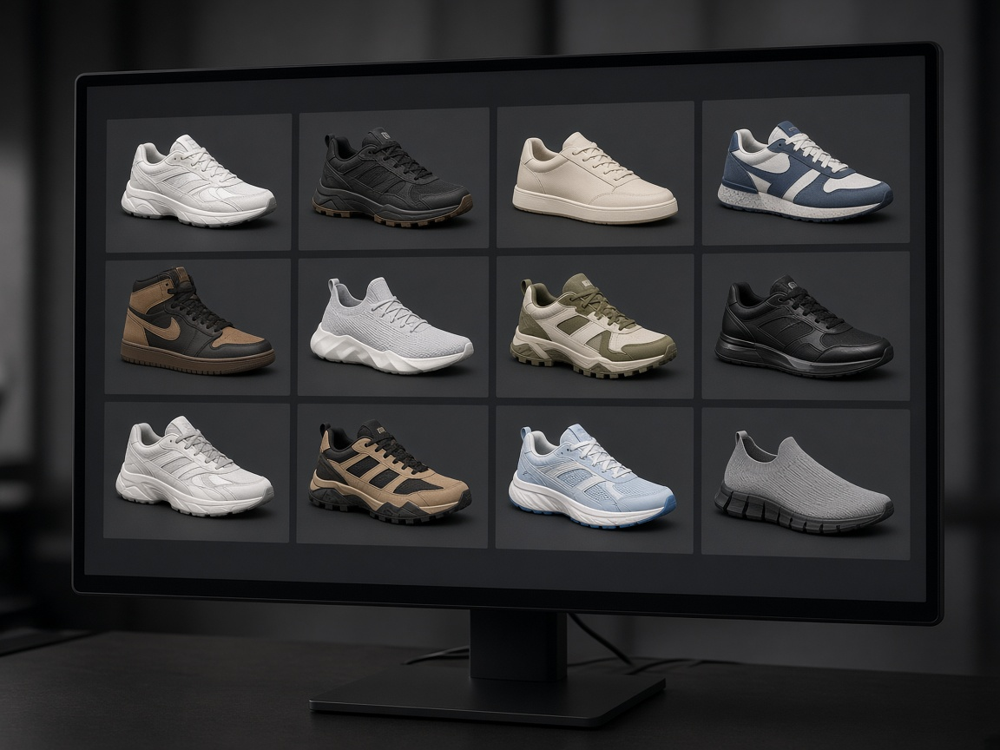
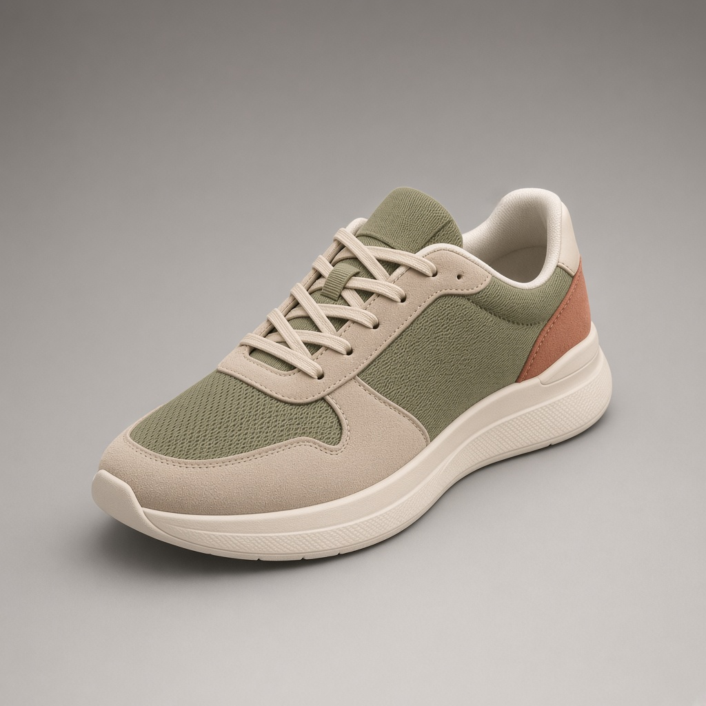

OPUSlab
OPUSlab creates and develops footwear through design, advanced 3D, technical engineering, prototyping, and manufacturing preparation.
Explore OPUSlabOPUS brings together OPUSlab, OPUStudio, and OPUS Manufacturing to guide footwear brands from concept through virtual and technical development to digital assets, marketing content, and Vietnam-based manufacturing.
Three specialized pillars support the work from early concept to market communication and Vietnam-based production.
OPUSlab creates and develops footwear through design, advanced 3D, technical engineering, prototyping, and manufacturing preparation.
Explore OPUSlabOPUStudio turns footwear into photorealistic renders, animation, videos, interactive e-commerce visuals, sales tools, and launch content.
Explore OPUStudioOPUS Manufacturing operates Vietnam-based production shaped by category, construction, technical requirements, quality control, and production capabilities.
Explore ManufacturingOPUSlab
OPUSlab brings together design direction, 3D and virtual development, technical interpretation, and physical development to move brand teams from early concept to production-ready footwear with fewer gaps across design, engineering, sampling, and manufacturing.
Where it starts
Product Creation shapes the early decisions behind a footwear program: category, consumer, design direction, material logic, construction, fit expectations, cost target, and development route.
Discuss Product CreationDesign & 3D Development helps teams review footwear earlier through CAD, 3D models, last-based proportion review, material exploration, and editable digital product data.
Discuss Design & 3D DevelopmentVirtual Development supports digital footwear workflows for both new and existing styles. This can include physical-to-digital conversion, reusable 3D style libraries, material and color updates, and virtual assets that help product teams review, update, and manage styles more efficiently across seasons.
Discuss Virtual DevelopmentThe Development Center is where footwear becomes physical. It develops last, pattern, construction, materials, development tooling, sampling stages, fitting, testing, line review, and manufacturing readiness.
Discuss Development CenterOutsole Mould and Tooling Engineering focus on the bottom unit of the shoe. OPUSlab supports outsole design, 3D development, blueprinting, mockups, compound and process alignment, mould development, and sole engineering. This helps brands review outsole concepts before mould investment and prepare bottom units for real product, wear, and manufacturing conditions.
Discuss Outsole Mould & Tooling EngineeringSampling is not one event. Each sample stage answers a different question.
The first physical translation of the concept.
Focused on fit, comfort, stance, and overall wear relationship.
A more advanced stage used to evaluate the product in a more commercial and technical state.
The final review stage before the product moves into full commercialization or bulk readiness.
Samples used for sales activities, internal line building, and commercial presentation.
Each stage exists for a reason. Together, they create a disciplined route from concept to commercial product.
3D and virtual development are most useful when they are connected to real footwear knowledge. That is what makes OPUSlab different from a general design studio or standalone 3D service. The digital work supports the product development process, not only the visual result.
Talk to OPUSlabOPUStudio
3D rendering, animation, videos, and interactive showcases for marketing, sales, e-commerce, and faster market communication.
OPUStudio creates photorealistic footwear renders, animation, videos, and interactive digital assets for e-commerce, sales tools, campaigns, and launches. The same shoe can be shown in different colors, materials, lighting conditions, and environments without repeating a full physical shoot.

Realistic footwear renders for product pages, campaigns, launch previews, sales presentations, and material or colorway updates.
Colorway: Option 1
Discuss Footwear Rendering →Footwear animation for product storytelling, launch content, websites, social media, campaign assets, and product explainers.
Discuss Footwear Animation →
Reusable digital product assets and digital style libraries that support sales teams, e-commerce, seasonal updates, launch planning, and internal product communication.
Discuss Digital Product Assets → Drag to rotate
Drag to rotate
Interactive e-commerce visuals for online product presentation, digital catalogs, and clearer product viewing across commercial channels.
Plan E-commerce Visuals →OPUStudio is designed for footwear brands and cross-functional teams that need reliable product visuals across commercial touchpoints.

preparing launch and campaign assets

building product pages and online catalogs

creating sell-in tools and presentations

reviewing styles, colorways, and seasonal updates

managing visual consistency across channels

promoting brand awareness
OPUS Manufacturing
Vietnam-based production shaped by brand category, construction, technical requirements, and production capabilities.
Footwear becomes stronger when development and manufacturing are built around the same product logic. OPUS Manufacturing supports complex constructions, advanced upper applications, outsole engineering, performance materials, and production oversight so brands can move from development into production with greater confidence.
These numbers show the scale of the platform. The value comes from how that scale is managed: by aligning product type, construction, materials, production flow, and quality expectations with the right manufacturing route.
Manufacturing capability is defined by how the shoe is built.
These applications are not presented as innovation for its own sake. They matter when they improve product structure, comfort, durability, finish, performance, manufacturing consistency, or commercial execution.

board-lasted constructions
Waterproof construction
HF / no-sew
Stock fitting
Computerized stitching
Quality built into the manufacturing process
Double Guard QMS adds a second layer of control across OPUS Manufacturing to support consistency, timeline discipline, and production accountability. It identifies issues earlier and keeps production aligned with the approved product standard.
The first layer is the manufacturing unit’s own quality control process.
The second layer is OPUS Manufacturing’s added management and oversight, designed to verify that standards are being followed, issues are communicated, and corrective actions are addressed during production.
Different categories require different answers in fit, materials, construction, tooling, and production scale.
OPUS supports outleisure, athleisure, outdoor, sneakers, performance, casual, and children’s footwear with development and manufacturing capabilities shaped around how each shoe needs to perform, fit, comfort, and scale.
About OPUS
OPUS is built by footwear people working across Europe and Asia, with expertise in product creation, digital product presentation, and Vietnam-based manufacturing.
From design thinking in Italy to development and production work in Vietnam, OPUS is structured to support footwear brands from early idea to manufacturing execution through OPUSlab, OPUStudio, and OPUS Manufacturing.
OPUS began with shoemaking roots, product details, and the practical work needed to turn ideas into real footwear. That foundation continues to shape how OPUS works today.
Behind OPUS is an international team of footwear people with different creative, technical, manufacturing, and commercial backgrounds. They bring experience from Europe and Asia, but what connects them is a shared understanding of how a shoe is designed, presented, and produced.
As OPUS has grown, that knowledge has become more structured. Today, it is organized through OPUSlab, OPUStudio, and OPUS Manufacturing, so product thinking, digital presentation, manufacturing coordination, and quality oversight can stay closer to the product.
OPUS works through a focused international structure. Italy and Vietnam sit at the center of the company’s product and manufacturing model, while the international structure supports footwear brands’ business operations.
Core hubs
Supporting locations
Italy
In Treviso, Italy, OPUSlab transforms inspiration from leading design shows, emerging materials, innovation, and evolving trends into distinctive footwear ideas and informed product choices for our clients’ brands. Set within Italy’s strong design culture, OPUSlab gives a clear product identity at the beginning of the process.
Vietnam
Vietnam is the operational heart of OPUS. From our headquarters and 3D development studio in Ho Chi Minh City, OPUS teams work together to carry footwear from virtual creation into physical development and production. With 8 manufacturing units across North and South Vietnam, OPUS aligns different footwear categories, constructions, and technical requirements with suitable production capabilities while keeping product knowledge and communication centralized.
International presence
OPUS also supports international brand relationships through coordinated operations in China, Singapore, and the Netherlands. These locations help support business development, communication, commercial coordination, and other practical needs that can arise when working across markets.
Every footwear project starts from a different point. Some brands come with an early idea. Others come with a sketch, CAD, 3D model, physical sample, carryover style, digital asset need, outsole challenge, or product ready for manufacturing.
We start by understanding the category, current development stage, available materials, technical questions, commercial needs, and target timeline.
Depending on the need, OPUS can involve product creation, design, 3D, digital presentation, development, outsole engineering, sourcing, manufacturing, quality, or client coordination teams.
The next step may be product creation, 3D development, virtual development, physical sampling, digital product presentation, outsole engineering, manufacturing preparation, or production execution.
As the project develops, OPUS keeps product information, technical input, digital assets, sourcing needs, quality expectations, and manufacturing reality connected around the product.
Whether you are starting with an early idea, refining a design direction, developing a 3D model, reviewing samples, preparing digital assets, engineering an outsole, or planning production in Vietnam, OPUS can help identify the right next step.
Start a Project
Start a footwear project conversation
Tell us about your category, development stage, digital asset needs, production goals, and target timeline. OPUS will help identify the right next step across OPUSlab, OPUStudio, and OPUS Manufacturing.
After receiving your inquiry, OPUS will review the project information and identify the most relevant next step. That may be a call, a request for more project detail, a focused discussion with the right team, or an initial assessment of whether the project fits the OPUS model.
You do not need to have every answer ready. The purpose is to give OPUS enough context to understand the project and respond with the most relevant route.
OPUS will review your inquiry and help identify the most relevant next step.